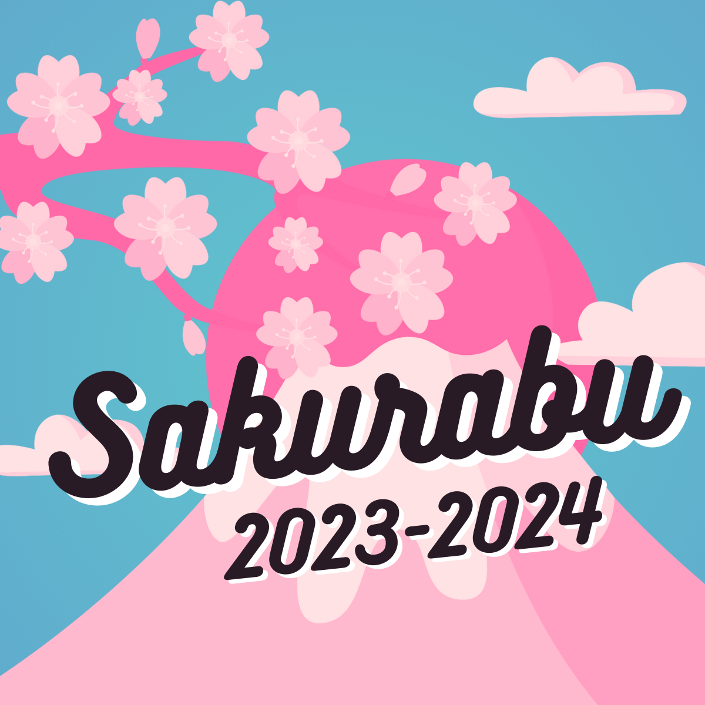
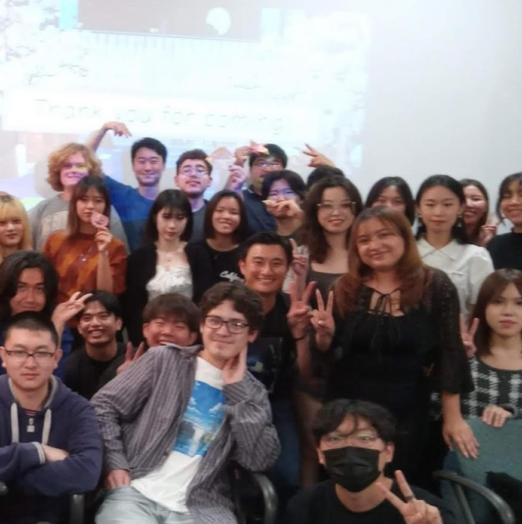

Noah Galarze
1st Year Japanese Major at the University of California Riverside
Greetings! My name is Noah Galarze, and I am a full-time student at UCR who speaks English and Japanese. I have been studying Japanese independently for more than 5 and a half years as I have a deep passion and interest for Japanese culture, media, history, games, cuisine, language, music, and travel. Speaking of travel, I have additionally traveled to Japanese twice on independent vacations in order to tour the country, meet family friends and converse with pen pals. Currently at UCR, I am an active participant of the Sakurabu English and Japanese Cultural Exchange Club, where I have made several Japanese friends whom I conversate with entirely in Japanese. I additionally plan on taking and passing the JLPT (Japanese Language Proficiency Test) N1 Certification Exam so that I may immigrate to Japan and acquire legal working rights.
I invite you to take a tour into my student resume. Thank you for your time and consideration.
Experience
Host/Busser/Foodrunner
• Maintained the cleanliness of the restaurant, stocked kitchen and bathroom supplies
• Greeted guests, provided host services, and seated parties of varying sizes
• Brought individual guests their ordered meals in a timely and appropriate fashion
Volunteer Interpreter
• Volunteered to translate for my relative's virtual art events planned for the students attending Shirahama Municipial Elementary School
• Interprets questions, drawing explanations, and stories in English and Japanese for both parties
Active Participant of UCR's English and Japanese Cultural Exchange Club
• Exchanges with Japanese students from Josai International University through a variety of cultural activites
• Tutors Japanese students voluntary through many modes of media, particulary input data from film and Youtube
Education
University of California Riverside
University of California Riverside
Chino Hills High School
Portfolio


.jpg)
.jpg)